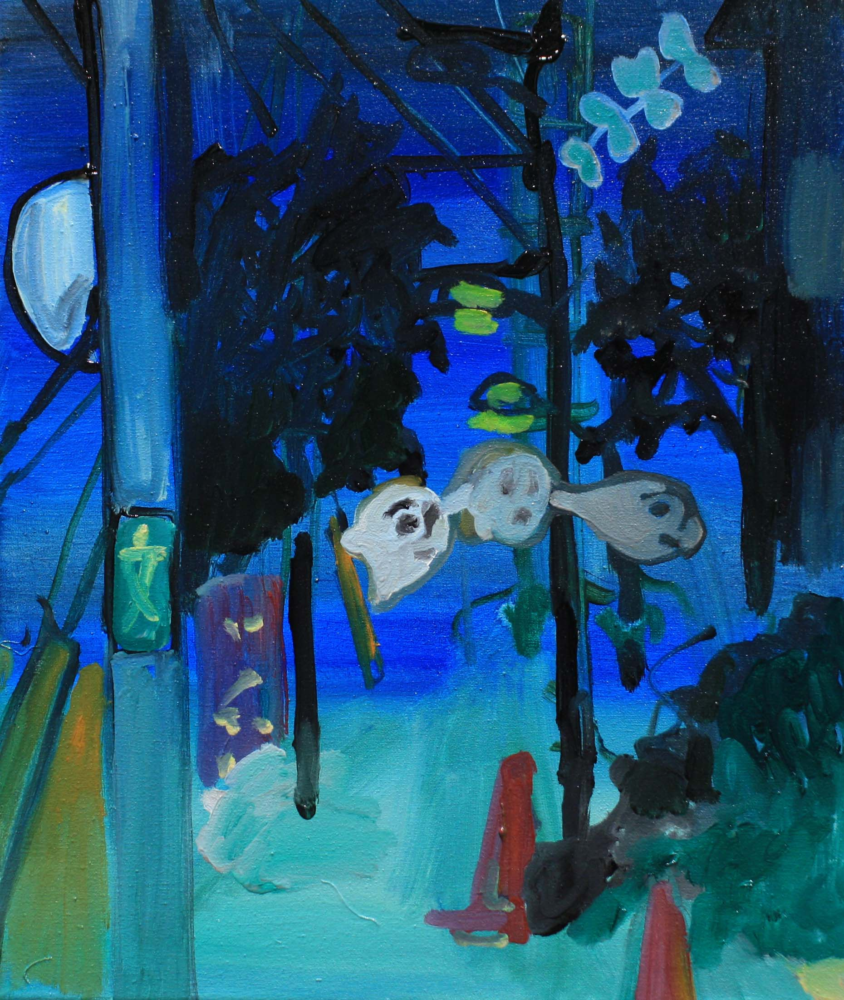

About Myself
My name is Mio Ebisu. I am a painter and an LQA game tester. I studied painting at Musashino Art University in
Tokyo and
the University of the Arts London. Over the years, I have exhibited my work in solo and group exhibitions and
participated in artist residencies internationally. The scroll galleries are examples of my work.
I live on a narrowboat moored in the River Lea with my partner, our one-year-old daughter, and our black cat. My
hobbies
include visiting hot springs, enjoying Finnish saunas, reading manga,wild plants foraging and actually, learning
is my hobby.


- 
Why I want to move into a career as a web developer?
Building a technical career:
I have been working as a painter since 2012 and represented artist by a gallery. Most of my work is in private collections. However, the financial situation is always tough. I have had many different jobs over the years – working as a chef, a bartender, a tester at a credit card company, internship at Gundom shops , home deco contents writer, and LQA game tester. While I gave my best in all these roles, I wanted a career where I could build on my skills over time. I have few friends who are programmers who also work in creative industries, so they inspired me. The more you code, the more experienced you become. The skills are specialized and technical. It is a skill that can contribute to any project and people. I realized that I wanted to be someone who can write code too. I started learning programming when I was pregnant.
A love for learning:
I have explored different areas of tech introduction level, including backend development, cloud computing, automation, IoT and web development. Firstly, I doubted whether I would enjoy coding and would not give up, because I come from very different background. To challenge this, I started with non-visual aspects of programming, testing whether I still found interests in learning without colour or shapes. And I did. I love the feeling of understanding something new and imagining a future where I can apply these skills to real-world scenario. Also I love the moment that I didn't understand this to I got it!
Problem-solving:
I have started working at a game testing company to enter the IT industry.The testing job was the most fun job ever done, finding bugs, thinking of wider scope to why it occurs. When I found the reason and received the fixed version, it was such a satisfying feeling. The job gives me confidence that I am going in the right direction.
Challenging unconscious bias:
Japan, my home country, still has a big gender gap in the tech industry(all sectors though). If I had never heard
of organizations like Django Girls and Code First Girls - groups that encourage women to enter tech - I took
their workshops as a participant - I might
have still assumed that programming was not for me. As well as Founders and Coders. When I read their Code of
Conduct that makes me feel very welcomed and secured.
I am a volunteer Japanese translator for Raspberry Pi Foundation, helping make Scratch educational resources more
accessible to children. Becoming a web developer is not just about my career - it's about using my skills to
empower others.
A rewarding application process:
Finally, I want to say how much I have enjoyed this application process. Knowing somebody will look at my practice
and the deadline pushed me harder. The
biggest challenge was creating a game. I could not believe I could finish it but I did - and I love it.
(I have messed up with the Git commit for this project. I have commit to the wrong repository.... the
commit history looks pretty quiet and inactive for this reason.)
Thank you for reading my storyüêô
My Learning Path
- Introduction to Python - First time to write 'Hello World'.
- Technical Vocabulary - Encountered many terms, unfamiliar with 99% of them.
- Azure Basics - Learned about cloud computing and Microsoft Azure services
- AZ-900 Certification - Studied and passed the Microsoft Azure Foundamentals(AZ-900)exam
- Pycon in Cardiff - In-person workshop, while 33rd weeks pregnant!
- Django - Followed tutorials on installing and creating Django project. Deployed it on Pythonanywhere.
- Supportive Environment - Two volunteer tutors were available to help participants. They are all so nice....
- Pycon - Watched other talks on a stage and a presentation by kids. They showed their projects made at the children's workshop. - very joyful and inspiring I almost criedüòÇ
- Python Community - Pycon was run entirely by volunteers. Filled with diversity and community-minded enthusiasm. My concern that I was the wrong person to be there was gone.
- Sleep Deprivation - I thought we are encouraged to have 7 hours sleep? I had 2 hours? You won't get sleep through the night experience in 1 year.
- New Concept of My Time- You decide the task you are going to do then you actually can do. Like going to toilet.
- Self-Learnt Course - Studied the Google IT Automation with Python program independently.
- Partial Completion - Completed 2 out of 6 classes.
- Skills Learned - Gained knowledge in the file handling, Git and regex.
- Career Exploration - I was interested in an automation technician role while enjoying testing jobs.
- Overwhelmed - Struggle to decide between IT support? QA Testing? Cloud? Web Development....? ...?
- Japanese Translation - Translate Scratch project tutorials in Japanese to make them accessible to children all over the world.
- First Point Communicator - This organization uses their website created with Node.js, and the main admin people are not programmers. I tried to help them by reading the problems they faced and raised the issues to more experienced programmers.
- CodeAcademy Full-Stack Developer Course - Completed 'Web Development Foundation' and 50 % 'Building Interactive Websites' Ongoing
- Focused Learning - Studying HTML, CSS and JavaScript to build a website and a game.
- Making and Learning - Created small demo sites and tested various behaviours, learning by actually building and experimenting with them.
- Upcoming Cohort Deadline - Preparing for submission in two months.
Check out the code for this website ‚Üí„ÄÄ„ÄÄhttps://github.com/stanleyneko/website-application-fandc